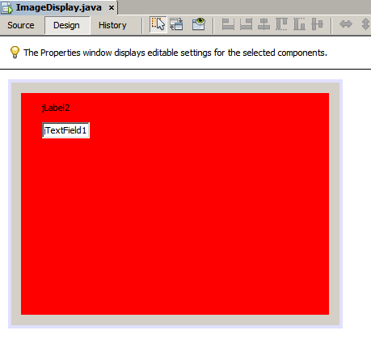
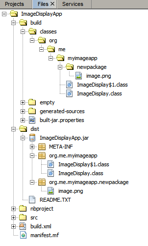

Apache NetBeans
Apache NetBeansLatest release
Java GUIアプリケーションでのイメージの処理
| This tutorial needs a review. You can edit it in GitHub following these contribution guidelines. |

Figure 1. このページの内容は、NetBeans IDE 7.4および8.0に適用されます
このチュートリアルを完了するには、次のソフトウェアとリソースが必要です。
| ソフトウェアまたはリソース | 必須バージョン |
|---|---|
バージョン7.4または8.0 |
|
バージョン6、7または8 |
概要
アプリケーションでのイメージの処理は、多くのJava初心者プログラマにとって共通の課題です。Javaアプリケーションでイメージにアクセスする標準的な方法は、`getResource()`メソッドを使用することです。このチュートリアルでは、IDEのGUIビルダーを使用して、アプリケーションにイメージ(および他のリソース)を含めるためのコードを生成する方法を説明します。さらに、IDEでイメージ処理コードを生成する方法をどのようにカスタマイズするかについても学びます。
このチュートリアルで作成するアプリケーションは、単一のイメージを表示するJLabelを1つ含む、単純なJFrameです。
アプリケーションの作成
-
「ファイル」>「新規プロジェクト」を選択します。
-
新規プロジェクト・ウィザードで、「Java」>「Javaアプリケーション」を選択し、「次」をクリックします。
-
「プロジェクト名」に「
ImageDisplayApp」と入力します。 -
「メイン・クラスの作成」チェックボックスを選択解除します。

-
「終了」をクリックします。
アプリケーション・フォームの作成
この項では、JFrameフォームを作成し、JLabelをフォームに追加します。
JFrameフォームを作成するには:
-
「プロジェクト」ウィンドウで、「
ImageDisplayApp」ノードを展開します。 -
「ソース・パッケージ」ノードを右クリックし、「新規」>「JFrameフォーム」を選択します。
-
「クラス名」に「
ImageDisplay」と入力します。 -
「パッケージ名」に「
org.me.myimageapp」と入力します。 -
「終了」をクリックします。
JLabelを追加するには:
-
「パレット」で「ラベル」コンポーネントを選択し、JFrameにドラッグします。
この段階で、フォームは次のイメージのように表示されているはずです。
イメージ用のパッケージの追加
アプリケーションでイメージまたは他のリソースを使用する場合は、通常、リソース用のJavaパッケージを別途作成します。ローカル・ファイル・システムでは、パッケージはフォルダに対応します。
イメージ用のパッケージを作成するには:
-
「プロジェクト」ウィンドウで、「
org.me.myimageapp」ノードを右クリックし、「新規」>「Javaパッケージ」を選択します。

-
「終了」をクリックします。
「プロジェクト」ウィンドウでは、`Source Packages`フォルダ内に新規パッケージが表示されているはずです。

ラベルでのイメージの表示
このアプリケーションでは、イメージがJLabelコンポーネント内に埋め込まれます。
イメージをラベルに追加するには:
-
GUIデザイナで、フォームに追加したラベルを選択します。
-
「プロパティ」ウィンドウで、「プロパティ」カテゴリをクリックし、アイコン・プロパティまでスクロールします。
-
省略符号(…)ボタンをクリックします。 アイコン・プロパティ・エディタが表示されます。

-
アイコン・プロパティのダイアログ・ボックスで、「プロジェクトにインポート」をクリックします。
-
ファイル・チューザで、システム上にある、使用するイメージに移動します。「次」をクリックします。
-
ウィザードの「ターゲット・フォルダの選択」ページで、`newpackage`フォルダを選択し、「終了」をクリックします。

-
「OK」をクリックしてアイコン・プロパティのダイアログ・ボックスを閉じます。
「OK」をクリックすると、IDEでは次の処理が行われます。
-
イメージをプロジェクトにコピー。これで、アプリケーションをビルドおよび配布するときには、イメージが配布可能JARファイルに含まれます。
-
イメージにアクセスするため、ImageDisplayクラスにコードを生成。
-
フォームの「デザイン」ビューで、イメージをラベルに表示。

この段階で、次のような基本的な操作を実行し、フォームの外観を改良できます。
-
「プロパティ」ウィンドウで、`text`プロパティを選択し、`jLabel1`を削除します。この値は、ラベルの表示テキストとして、GUIビルダーで生成されたものです。しかし、今はテキストではなくラベルを使用してイメージを表示しているため、テキストは必要ありません。
-
`jLabel1`をドラッグしてフォームの中央に配置します。

生成されたコードを表示するには:
-
GUIデザイナで、「ソース」ボタンをクリックします。(「ソース」ボタンが表示されない場合は、メイン・メニューから「ビュー」>「ソース・エディタ」ツールバーを選択します。)
-
「Generated Code」という行まで下にスクロールします。
-
「Generated Code」行の左にあるプラス記号(+)をクリックし、GUIデザイナで生成されたコードを表示します。
主な行は次のとおりです。
jLabel1.setIcon(new javax.swing.ImageIcon(getClass().getResource("/org/me/myimageapp/newpackage/image.png"))); // NOI18N`jLabel1`の`Icon`プロパティにプロパティ・エディタを使用したため、IDEでは`setIcon`メソッドが生成されました。このメソッドのパラメータには、`ImageIcon`の匿名の内部クラスにある`getResource()`メソッドへのコールが含まれます。生成されたイメージへのパスは、アプリケーションのパッケージ構造内での位置に対応します。
注意:
-
アイコン・プロパティ・エディタで「外部イメージ」オプションを使用すると、IDEではイメージをプロジェクトにコピーするかわりに、イメージへの絶対パスが生成されます。したがって、使用中のシステムでアプリケーションを実行するとイメージが表示されますが、別のシステムでアプリケーションを実行するとイメージは表示されない可能性があります。
-
`getResource`メソッドは、アプリケーションで必要になる可能性のあるデータを含むテキスト・ファイルなど、他のタイプのリソースにアクセスする場合にも便利です。
Jlabelに対するマウス・イベントのイベント・ハンドラを登録するには:
「デザイン」ビューで「JLabel」を右クリックし、ポップアップ・メニューから「イベント」>「マウス」>「mouseClicked/mousePressed/mouseReleased」を選択します。 対応するイベントのイベント・ハンドラが生成されます。
注意: イベント・ハンドラでは、event.getPoint()、event.getX()、または`event.getY()`メソッドを使用してマウス座標(たとえば、マウス・クリックの場所)を取得できます。詳細は、クラスMouseEventを参照してください。
フレームの背景としてのイメージの表示
SwingにはJFrameの背景イメージに対する直接のサポートがないため、GUIビルダーにもJFrameの背景イメージに対する直接のサポートはありません。 いずれにしても、このような目標を達成するための様々な間接的な方法があります。このアプリケーションでは、イメージを含むJLabelがJFrameコンポーネント内に組み込まれる一方で、そのJLabelの上に透明なJPanelが配置され、すべてのコンポーネントの親として使用されます。
イメージを含むJFrameに透明なJPanelを追加するには:
-
「ファイル」>「新規プロジェクト」を選択します。
-
新規プロジェクト・ウィザードで、「Java」>「Javaアプリケーション」を選択し、「次」をクリックします。
-
「プロジェクト名」に「
BackgroundImageApp」と入力します。 -
「メイン・クラスの作成」チェックボックスを選択解除します。

-
「終了」をクリックします。
-
「プロジェクト」ウィンドウで、「
BackgroundImageApp」ノードを展開します。 -
「ソース・パッケージ」ノードを右クリックし、「新規」>「JFrameフォーム」を選択します。
-
「クラス名」に「
ImageDisplay」と入力します。 -
「パッケージ名」に「
org.me.mybackgroundapp」と入力します。

-
「終了」をクリックします。
-
「デザイン」ビューで「JFrame」を右クリックし、ポップアップ・メニューから「レイアウトを設定」>「グリッド・バッグ・レイアウト」を選択します。
-
「JFrame」を右クリックし、ポップアップ・メニューから「パレットから追加」>「Swingコンテナ」>「パネル」を選択します。
-
「プロパティ」ウィンドウで、jPanelの「
opaque」プロパティを選択解除します。 -
「JFrame」を右クリックし、ポップアップ・メニューから「パレットから追加」>「Swingコントロール」>「ラベル」を選択します。
-
「プロジェクト」ウィンドウで、「
org.me.mybackgroundapp」ノードを右クリックし、「新規」>「Javaパッケージ」を選択します。 -
「終了」をクリックします。新規パッケージが追加されます。
-
GUIデザイナで、フォームに追加したラベルを選択します。
-
「プロパティ」ウィンドウで、「プロパティ」カテゴリをクリックし、アイコン・プロパティまでスクロールします。
-
省略符号(…)ボタンをクリックします。
-
アイコン・プロパティのダイアログ・ボックスで、「プロジェクトにインポート」をクリックします。
-
ファイル・チューザで、システム上にある、使用するイメージに移動します。「次」をクリックします。
-
ウィザードの「ターゲット・フォルダの選択」ページで、`newpackage`リソース・フォルダを選択し、「終了」をクリックします。
-
「OK」をクリックしてアイコン・プロパティのダイアログ・ボックスを閉じます。
-
ナビゲータで、「jPanel」を右クリックし、ポップアップ・メニューから「プロパティ」を選択します。
-
「プロパティ」ダイアログ・ボックスで、「
グリッドX」、「グリッドY」、「ウエイトX」、および「ウエイトY」プロパティを「1」に設定し、「フィル」プロパティを「両方」に設定します。

-
「閉じる」をクリックします。
-
jLabelについて手順24と25を繰り返します。
-
「プロパティ」ダイアログ・ボックスで、`text`プロパティを選択して`jLabel1`を削除します。

背景が完了しました。たとえば、jLabelとjTextFieldをパレットからjPanelにドラッグできるようになりました。この両方が背景イメージの上に表示されます。

注意: 説明した対処方法の利点は、背景イメージがデザイン時と実行時の両方で表示されることです。
アプリケーションのビルドと実行
これで、イメージにアクセスして表示するためのコードが生成されたので、アプリケーションをビルドおよび実行し、イメージにアクセスしていることを確認できます。
まず、プロジェクトのメイン・クラスを設定する必要があります。メイン・クラスを設定すると、プロジェクトの実行時にどのクラスを実行するかがIDEで認識されます。さらに、アプリケーションのビルド時に、アプリケーションのJARファイルの`Main-Class`要素が確実に生成されます。
プロジェクトのメイン・クラスを設定するには:
-
ImageDisplayAppプロジェクトのノードを右クリックし、「プロパティ」を選択します。
-
「プロジェクト・プロパティ」ダイアログ・ボックスで、「実行」カテゴリを選択します。
-
「メイン・クラス」フィールドの横の「参照」ボタンをクリックします。次に、`org.me.myimageapp.ImageDisplay`クラスを選択します。

-
「メイン・クラスを選択」ボタンをクリックします。
-
「OK」をクリックして、「プロジェクト・プロパティ」ダイアログ・ボックスを閉じます。
プロジェクトをビルドするには:
-
メイン・ツールバーから「実行」>「プロジェクトを消去してビルド」(project_name)を選択します。
アプリケーションのビルド結果は、「ファイル」ウィンドウに表示できます。`build`フォルダには、コンパイル済のクラスが格納されます。`dist`フォルダには、コンパイル済のクラスとイメージを含む、実行可能なJARファイルが格納されます。

プロジェクトを実行する
-
メイン・ツールバーから「実行」>「プロジェクトの実行」(project_name)を選択します。
カスタム・コードの作成
多くのアプリケーションでは、表示するイメージは、この例に示すように静的に決定されるわけではありません。たとえば、表示するイメージは、ユーザーがクリックする対象によって決まる場合があります。
表示するイメージをプログラムで選択できるようにする必要がある場合は、リソースにアクセスして表示するための、独自のカスタム・コードを作成できます。IDEでは、GUIビルダーで生成されたコードを含むソース・ビューの「保護されたブロック」にコードを直接記述することはできません。ただし、「プロパティ」ウィンドウからアクセスできるプロパティ・エディタから、保護されたブロックにコードを挿入できます。この方法でプロパティ・エディタを使用すると、GUIビルダーでデザインを変更してもカスタム・コードが失われません。
たとえば、JLabelの`icon`プロパティのカスタム・コードを作成するには:
-
「デザイン」ビューまたは「ナビゲータ」ウィンドウで「JLabel」を選択します。
-
「プロパティ」ウィンドウで、「
icon」プロパティの横にある省略符号(…)ボタンをクリックします。 -
ダイアログ・ボックスの上部にあるドロップダウン・リストから、「カスタム・コード」オプションを選択します。
このプロパティ・エディタの「カスタム・コード」オプションを使用すると、`setIcon`メソッドのパラメータを入力できます。このパラメータには、必要なロジックを入力したり、クラスの別の場所で手動でコーディングした別のメソッドへのコールを入力することもできます。

サマリー
このチュートリアルでは、NetBeans IDEで作成するアプリケーションからイメージにアクセスする方法を説明しました。イメージの処理は、Javaのチュートリアルでさらに説明します。
*注意: *このチュートリアルの例は、Javaチュートリアルのアイコンの使用方法の項にある最初の例とよく似ています。異なるのは、このチュートリアルで生成されるコードでは、アイコンをラベルに適用するために、`JLabel`の`setIcon`メソッドが使用される点です。Javaチュートリアルの例では、アイコンはコンストラクタに渡されることでラベルに適用されます。
関連項目
-
_NetBeans IDEによるアプリケーションの開発_のJava GUIの実装

{kind=link}
{kind=link}